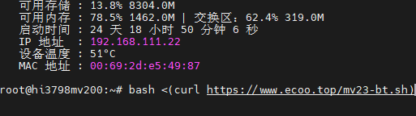
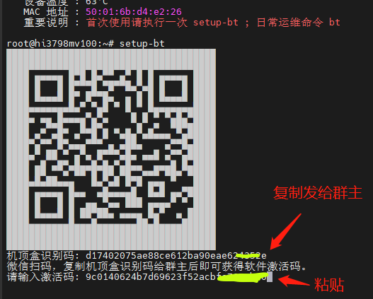
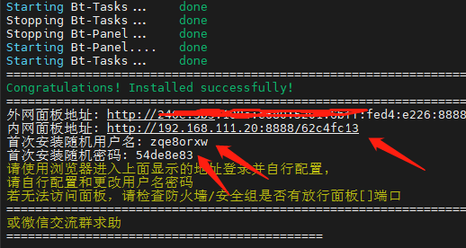
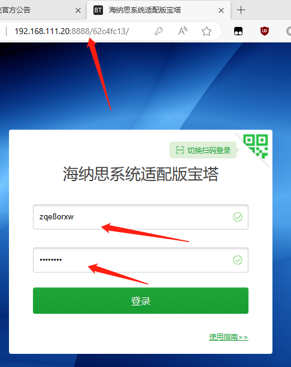
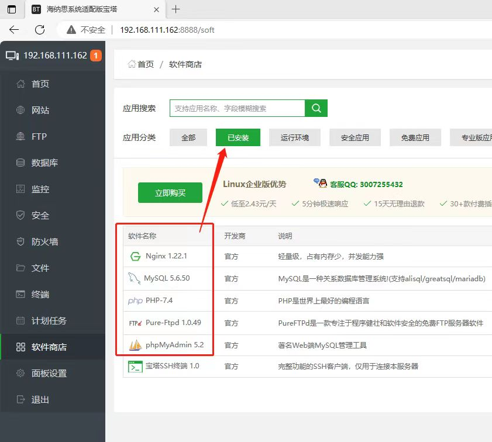
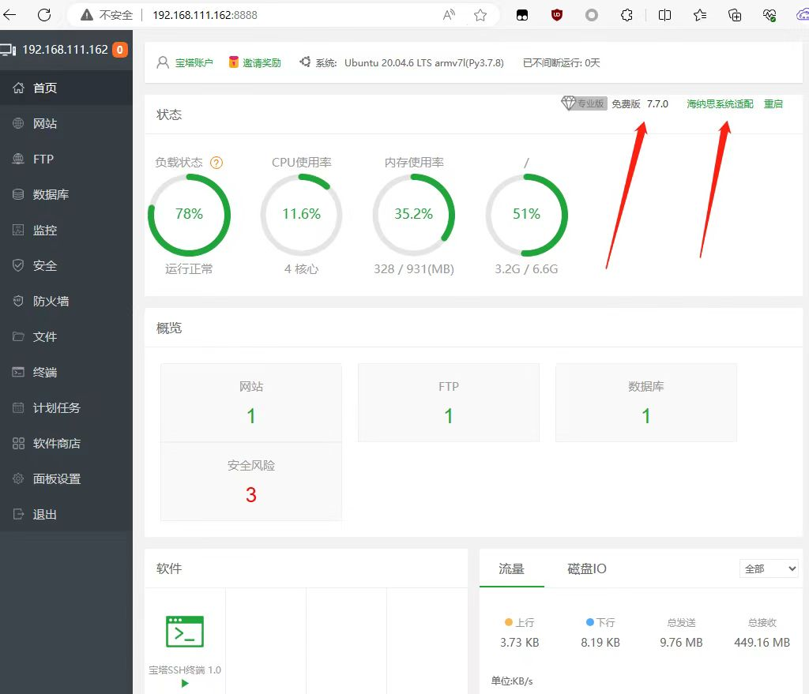

海纳思宝塔专用固件安装和使用说明
1.一键切换系统命令
请根据不同机型在 SSH 终端执行不同命令一键切换系统。
复制以下代码粘贴到终端后，按回车键。
注意：这是全新安装专用固件，原系统如有资料请注意保存。
a.海思机顶盒 32 位系统：hi3798mv100 CPU机型
mv100
bash <(curl https://www.ecoo.top/mv100-bt.sh)
b.海思机顶盒 64 位系统：hi3798mv200/300 CPU机型
mv200/300
bash <(curl https://www.ecoo.top/mv23-bt.sh)
c.玩客云盒子 32 位系统：晶晨S805 CPU机型
s805请参考刷机教程，直接线刷包刷入：
/docs/tutorial-basics/s805
图例

2.安装后首次运行执行激活
根据路由器自动分配的 IP 使用 SSH 终端进入系统，
直接浏览器打开 IP 是没有网页的，
在 SSH 终端输入 setup-bt 后回车，
按照提示获取激活码，粘贴激活码，回车，等待系统自动激活后的安装。
注意，未激活的系统将无法正常使用。
激活码是绑定 CPU 的永久激活码，重新刷机或重置系统都可以继续使用。
激活码每台10元，扫码群主可获得。
花费无数日夜，适配和开发不易，为了作者继续维护，感谢支持！
图例

3.激活后进入宝塔
注意，尚未建站点（或尚未设置默认站点）之前，IP首页是没有显示的。
图例




4.进阶玩法（有空了再补充写）
a. 修改盒子mac地址
b. 使用公网ip或域名从外网访问自建站点
c. 使用内网穿透从外网访问自建站点
d. 将系统安装到TF卡或者U盘或者USB移动硬盘，达到扩容目的
e. 自建影视自动更新网站
。。。。
后记
由于宝塔面板官方不再支持 armv7-32 位 CPU 的安装，所以，群主花费不少功夫预制编译了包含全家桶 LNMP 的专用固件。
由于宝塔面板的官方安装方式是靠编译安装的，多数玩家没有能力进行安装过程判断，所以才有了宝塔专用固件。
通过预制编译好的固件，直接运行宝塔，对硬件的需求就降低了，可以很流畅运行。
如果你想更多的学习什么是宝塔，如何使用，请浏览宝塔官网网站。www.bt.cn